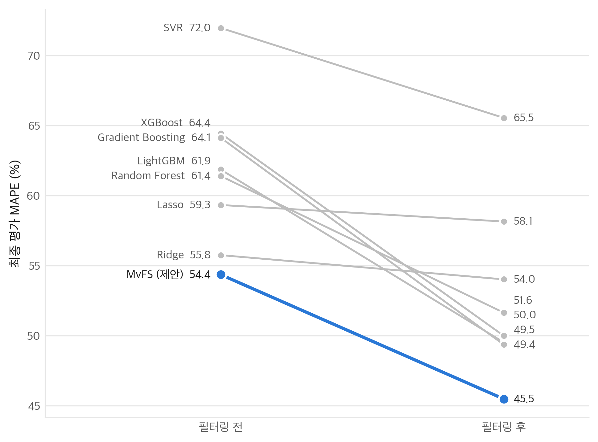
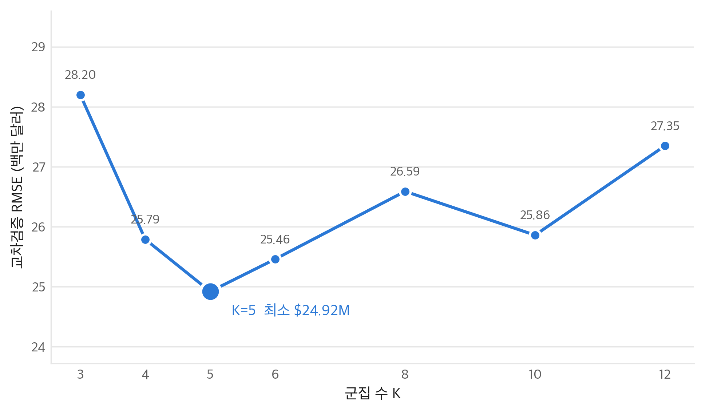
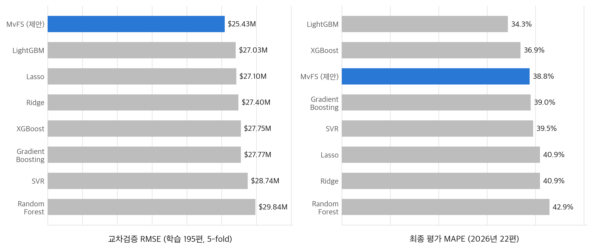
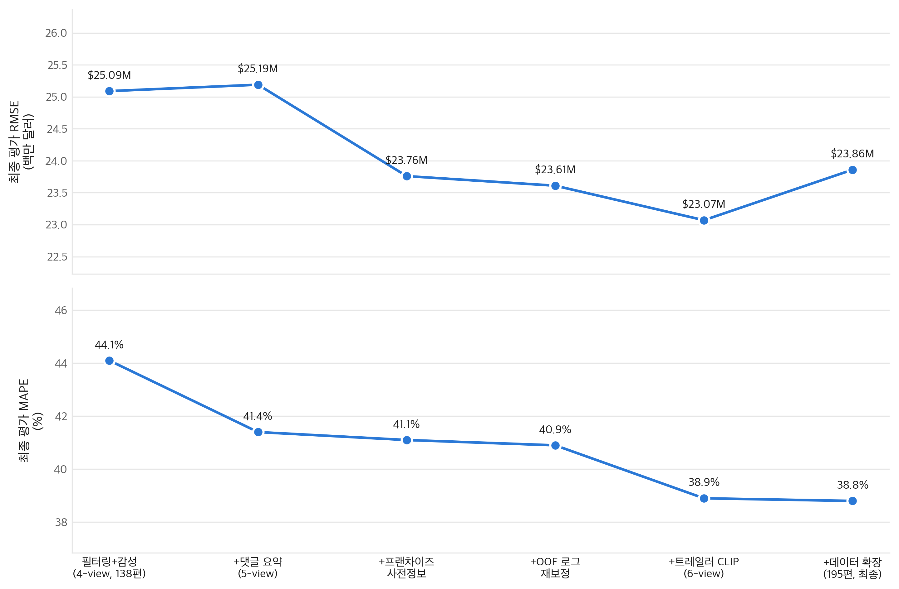
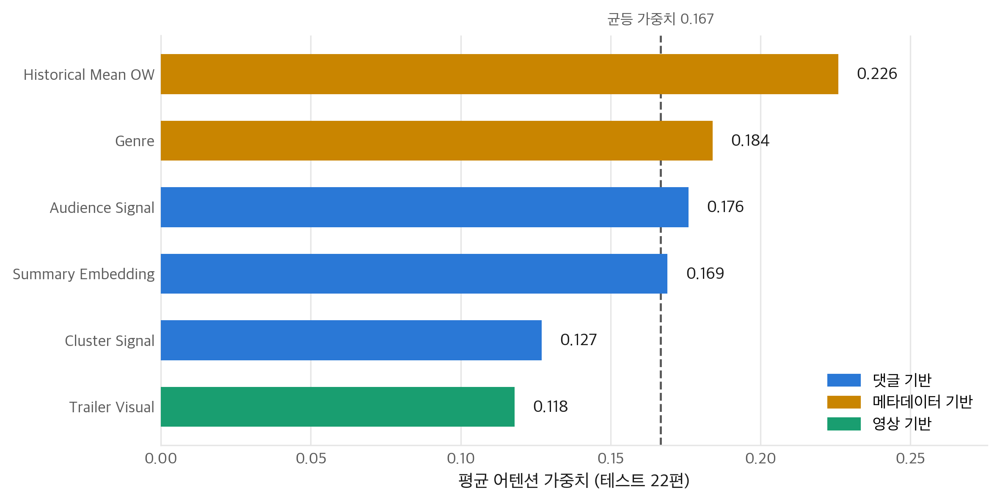
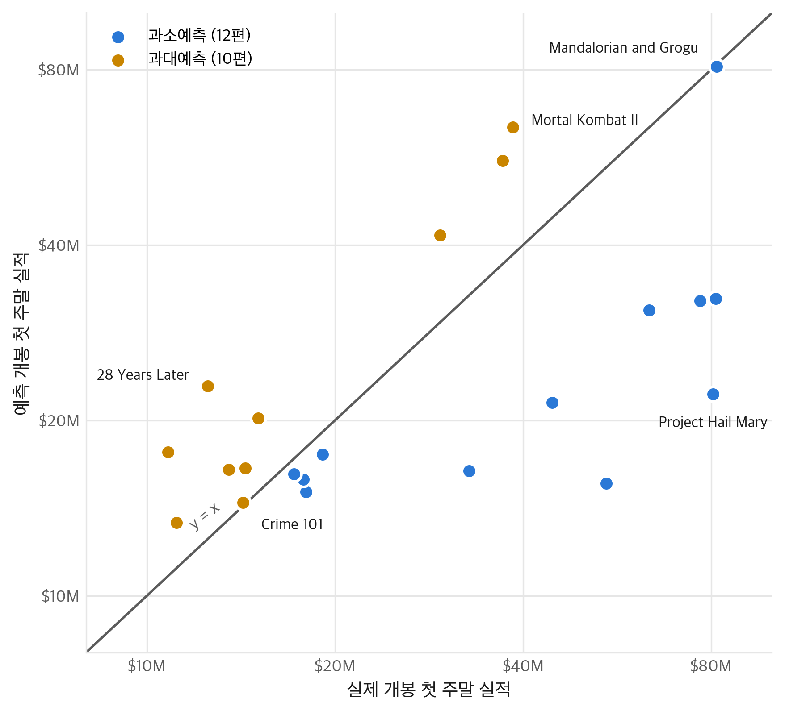

예고편이 공개되고 일주일. 그 사이 쌓인 댓글과 영상만으로 북미 개봉 첫 주말 흥행을 예측한다.One week after a trailer goes live. Using only the comments and footage from that window, we predict North American opening weekend revenue.
광고비와 상영관은 개봉 4~8주 전에 확정된다. 기존 예측 수단은 그보다 늦게 나온다.Ad budgets and screen counts are locked 4-8 weeks before release. Every existing forecasting tool arrives later than that.
선행 연구가 쓰는 개봉 스크린 수나 광고 노출량은 배급사가 이미 내린 판단의 결과다. 이런 변수로 학습한 모델은 흥행 요인을 찾는 대신 배급사의 판단을 되읽는다.Screen counts and ad impressions — the strongest predictors in prior work — are outcomes of decisions the distributor already made. A model trained on them reads back the distributor's judgment instead of finding what drives revenue.
댓글과 영상, 두 갈래를 묶어 트레일러 정보라 부른다. 둘 다 배급사가 돈을 쓰기 전에 만들어진다.Comments and footage — two streams we call trailer information. Both exist before the distributor spends anything.

속편은 과거 실적이, 오리지널 신작은 관객 반응이 흥행을 설명한다. 같은 가중치를 모든 작품에 쓸 이유가 없다.Sequels are explained by franchise history; original films by audience reaction. There is no reason to weight them the same way.
「전편이 끝난 방식을 보면 속편이 필요할 것 같지 않았는데, 트레일러가 워낙 잘 만들어져서 이제는 관심이 간다」 — 회의와 관심이 한 문장에 있다. 가장 가까운 군집 하나에 배정하면 나머지는 버려진다. 실제로 1·2위 군집의 확률 차이는 중앙값이 0.011이었다."I did not think this needed a sequel, but the trailer is so well made that I am intrigued now" — doubt and interest in one sentence. Assigning it to a single nearest cluster throws the rest away. In our corpus the gap between the top two clusters had a median of 0.011.

학습 195편(2021.3~2025.12), 평가 22편(2026 상반기). 무작위가 아닌 시간 기준 분할이라 실제 운용 조건에 가깝다.195 films for training (Mar 2021-Dec 2025), 22 for evaluation (H1 2026). A temporal split, not a random one, so the numbers reflect real deployment.
| Model | CV RMSE | CV MAPE | Test RMSE | Test MAPE |
|---|---|---|---|---|
| MvFS | $25.43M | 44.6% | $23.86M | 38.8% |
| LightGBM | $27.03M | 45.3% | $23.30M | 34.3% |
| Lasso | $27.10M | 49.6% | $24.99M | 40.9% |
| Ridge | $27.40M | 50.8% | $24.42M | 40.9% |
| XGBoost | $27.75M | 45.2% | $24.44M | 36.9% |
| Random Forest | $29.84M | 47.0% | $25.40M | 42.9% |
교차검증에서는 제안 모델이 가장 낮다. 평가 데이터에서 LightGBM이 앞서지만 22편 규모에서는 대형 작품 한두 편으로 순위가 뒤집힌다.MvFS leads on cross-validation. LightGBM wins on the test set, but with 22 films one or two large titles can flip that ranking.


학습 138편에서 Trailer Visual을 더하면 CV RMSE가 $25.84M → $26.40M으로 나빠진다. 195편에서는 $25.77M → $25.43M으로 좋아진다. 512차원을 16차원으로 줄여 쓰는 만큼, 그 관계를 추정할 표본이 필요하다.At 138 training films, adding Trailer Visual makes CV RMSE worse ($25.84M → $26.40M). At 195 it helps ($25.77M → $25.43M). Compressing 512 dimensions into 16 only pays off once there are enough films to fit the mapping.
어텐션 가중치는 사후 분석이 아니라 예측 과정에서 직접 나온다. 작품별로 근거를 분해할 수 있다.The attention weights are produced during prediction, not recovered afterwards. Every film's forecast can be broken down.


@misc{seo2026trailer,
title = {Predicting Opening Weekend from YouTube Trailer Information},
author = {Seo, Jeongbeom},
year = {2026}
}